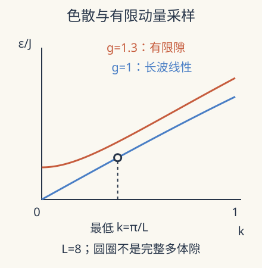

本页目录
强关联与非平衡 II · 量子临界：有限系统怎样接近没有尺度的点
先修：Hubbard 二聚体、固体磁性、MPS 与纠缠。本讲从二阶能级推进到无限链与尺度律。自由费米子变换的完整算符代数需二次量子化；这里保留决定色散与临界指数的最小矩阵。
有限链始终有离散能级，怎样判断真正的临界点？
1. 两种相互不对易的偏好
考虑一维横场 Ising 链
\(\sigma\) 是本征值为 \(\pm1\) 的 Pauli 矩阵，不能和本征值 \(\pm1/2\) 的自旋算符混用。\(J,h\) 有能量单位。相邻耦合偏好 \(x\) 方向一致，横场偏好 \(z\) 方向；因 \([\sigma^x,\sigma^z]\ne0\)，两项不能同时逐项取最小值。这是在零温仍有涨落的原因。
\(g=0\) 的两种完全有序态简并；\(g\gg1\) 时基态接近全部沿 \(+z\) 的乘积态。在无限链极限，两种行为于 \(g=1\) 相接。有限对称链的基态可能是两种有序方向的对称叠加，此时 \(\langle\sigma^x\rangle=0\)，却有长程关联。因此不能单看一阶平均量，也不能把“平均为零”自动译成无序。
2. 关键机制藏在一个二阶矩阵里
Jordan–Wigner 变换用一串自旋奇偶算符给费米子补上交换负号。Fourier 变换后，\(k\) 与 \(-k\) 的产生、湮灭分量相互耦合。选定相位约定，可将对应 Bogoliubov 矩阵写成
\(\tau\) 作用在粒子—空穴分量上，不是另添一种物理自旋。利用 \(\tau_z^2=\tau_y^2=I\) 和反对易关系，平方时交叉项抵消，于是本征值为 \(\pm\epsilon_k\)，其中
这一步展示了为何根号里同时有“偏离临界点”与“空间变化”的贡献。两分量的负能分支与重复计数必须在建立完整多体 Hamiltonian 时统一处理；仅凭这个矩阵不能随意给基态能量乘 2。
3. 长波极限让指数变得可算
在 \(g\approx1,k\approx0\) 时，\(\sin(k/2)\approx k/2\)，得到
在临界点，能量与 \(|k|\) 成正比，因此动态指数 \(z=1\)。偏离临界点后，热力学准粒子能隙为 \(\Delta_\infty=2J|g-1|\)，故 \(z\nu=1\)，这里 \(\nu=1\)。比较根号里的两项还得到相关长度的发散尺度 \(\xi/a\propto|g-1|^{-1}\)，\(a\) 是格点间距；比例常数与关联函数的定义有关。
“没有尺度”指临界极限的长距离行为没有有限相关长度，并不表示晶格间距消失或所有能量都为零。短距离仍记得微观模型，有限温度又引入热长度。普适性是在适当长波窗口内出现的约束。

4. 把有限尺寸效应当作信息
在偶费米奇偶扇区采用反周期边界时，允许动量 \(k=(2n+1)\pi/L\)。本实验只画这个扇区的准粒子色散，并取最低动量能量
\(\delta_L\) 是选定动量的单准粒子尺度，不是自动等于完整周期自旋链最低两能级之差。完整谱须比较奇偶扇区并满足激发数约束；完整的字符串符号推导与 L=4、6 自旋矩阵实验见Ising 奇偶与完整谱。特别在有序侧，近简并基态的劈裂可远小于这一尺度。
先预测：临界点把链长加倍，最低动量能量是趋零、保持不变，还是增大？若 \(g=1.5\)，同样操作为何会逐渐失效？
改变横场比值与偶数链长，观察固定边界扇区的色散、最低动量尺度与热力学准粒子能隙。
默认静态核对：\(g=1,L=32\) 时，\(k_{\min}=\pi/32\)，\(\delta_L/J=4\sin(\pi/64)\approx0.196271\)，而 \(\Delta_\infty=0\)。\(L=64\) 时约为 \(0.098165\)。在 \(g=1.5\) 时，无限长度极限是 \(\Delta_\infty/J=1\)，不能继续按 \(1/L\) 下降。
有限温度提供第三个需要单独调节的尺度。当 \(k_BT\) 与所关心的低能尺度相当时，多个能级被热占据，零温近似不再由“温度绝对数值很低”保证。增大链长会使临界能量尺度继续降低，因此固定温度的数据未必越来越接近零温基态。一个可信的尺寸扫描需要同时解释温度或制备误差是否随尺寸受控，并尽可能比较关联函数与谱信息。若能隙下降而关联长度停止增长，首先应检查温度、边界及有限键维，不能立即宣布发现了新的临界指数。
5. 为什么慢慢穿过临界点也会留下缺陷
令控制参数线性扫过临界点，\(g(\tau)-1=\tau/\tau_Q\)，\(\tau\) 是时间。瞬时响应时间约为 \(\hbar/\Delta\propto1/|g-1|\)，而控制参数明显变化的时间为 \(|(g-1)/\dot g|=|\tau|\)。两者相当时系统难再跟随瞬时基态。
忽略非普适常数，得到冻结时间 \(\hat\tau\propto\tau_Q^{1/2}\)、冻结长度 \(\hat\xi\propto\tau_Q^{1/2}\)，一维独立缺陷间隔的尺度估计给 \(n_{\rm defect}\propto\tau_Q^{-1/2}\)。这是此模型 \(z=\nu=1\) 下的 Kibble–Zurek 预测，不是所有扫场协议的通用幂律。有限链、非线性扫场、初温和相干干涉都能改变可见窗口。
绝热定理要求控制能级间隔及变化速率；临界附近隙变小，使“总扫场时间已经很长”成为不充分的判断。真正应比较的是随尺寸变化的最慢时间尺度。
6. 研究窗口与失败边界
临界谱把前一讲的局部交换能量推进到集体长波模式，也给下一讲的非平衡演化提供初态与淬火协议。研究时可问：增加尺寸后，哪些曲线能在缩放变量 \((g-1)L^{1/\nu}\) 上重合？加入相互作用后，自由费米子色散失效，但对称性和维度是否仍允许相同普适类？
数值曲线塌缩不是自动的证明。若只挑窄窗口、自由调整多个指数，很容易把平滑交叉拟合成临界性。应公布拟合区间，保留未用于拟合的尺寸，并检查修正项与不同观测量。张量网络的有限键维也会引入人工相关长度，不能把它误当作物理隙。
本课不把一个一维可积例子宣称为二维强关联相图的答案。Pfeuty 的精确解和 Dziarmaga 的动力学研究提供受控基准；更高维量子模拟与非平衡临界问题仍需分别检查模型、噪声和测量可达时间。
7. 两道迁移题
题 1。 临界点 \(L\to2L\)，\(L\delta_L/J\) 趋向什么常数？这检验了哪个指数？
核对题 1
由 \(\sin x\sim x\) 得极限 \(2\pi\)，检验该准粒子尺度的 \(z=1\) 有限尺寸缩放。它不证明所有多体能隙都具有相同前因子。
题 2。 两条有限链都测得 \(\langle\sigma^x\rangle=0\)，能据此说它们都处于无序相吗？
核对题 2
不能。对称基态即使有长程有序关联，一阶平均也可为零。应检查 \(\langle\sigma_i^x\sigma_j^x\rangle\) 随距离和尺寸的行为，并说明取外场趋零与热力学极限的顺序。
速查与原始阅读
\(\epsilon_k/J=2\sqrt{(g-1)^2+4g\sin^2(k/2)}\)；临界长波 \(z=\nu=1\)。实验的 \(\epsilon_{\pi/L}\) 是指定扇区的准粒子尺度，不能替代完整自旋谱。
- Pfeuty：横场 Ising 链的精确解，Annals of Physics 57，1970 年理论论文；原文自旋归一化须与本讲换算。
- Dziarmaga：量子相变动力学与稳态弛豫，2009 年首发、2010 年期刊综述，讨论扫过临界点的尺度律与条件。
- Simmons-Duffin：共形理论与 bootstrap 讲义，2016-02-25 首发；为临界极限的关联函数提供下一条路线。
来源核查：2026-09-08。下一讲：退相位与本征态热化。